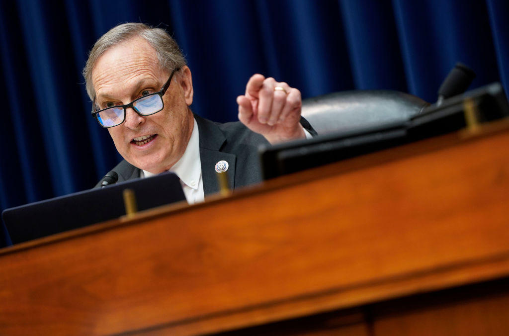

On November 20, 2024, during a House Judiciary Subcommittee on Immigration Integrity, Security, and Enforcement hearing, Arizona Congressman Andy Biggs put a direct question to then-HHS Secretary Xavier Becerra:
“How did we see children ending up in the homes of MS-13 gang members as the sponsor? How’d that happen?”
Becerra replied that he did not have the specific information before him, but insisted no sponsor would be allowed to take a child if the agency had information showing engagement in criminal activity. Biggs pressed further: if the vetting is not done right, you never know. That is how children end up with MS-13 sponsors. That is how the system produces the outcome the policies claimed to prevent.
Key Facts at a Glance
Unaccompanied migrant children entered ORR custody during Becerra’s tenure as HHS Secretary (2021–early 2025).
Children the New York Times reported HHS could not reach after placement (2023 investigation covering a two-year window).
Unaccompanied children released without Notices to Appear, per DHS OIG (as of May 2024 data window).
Year HHS directives relaxed certain background-check and DNA requirements for sponsors and household members.
Numbers vary by source and time window. Later 2025–2026 statements from officials and whistleblowers have cited higher figures of children remaining unaccounted for.
The Exchange
Biggs opened by asking whether ORR policies prioritized speedy placement or the safety and protection of the child after placement. Becerra answered that safety and well-being come first. Biggs then cited March 2021 directives: DNA use limited to establishing biological relationships and not submitted to law-enforcement databases; DNA submission voluntary; background checks for adult household members and alternative caregivers not required as a condition of release under Category 2.
“How in the world does that protect the child… when you are taking whoever is the sponsor at their word?” Biggs asked.
Becerra maintained that ORR uses multiple techniques, including fingerprinting and DNA “on occasion.” Biggs zeroed in on the qualifier and referenced Senator Chuck Grassley’s report documenting cases in which children were released to sponsors with MS-13 ties and potential traffickers. His conclusion was blunt: the vetting was inadequate, and that is how the worst outcomes occur.

What Changed in 2021
Early in the Biden administration, HHS moved to accelerate the release of unaccompanied children from federal custody. Internal directives reduced certain biometric and household-member screening requirements that had been used to flag criminal histories and gang affiliations. Whistleblowers and Senate investigations later documented cases in which case managers raised red flags about MS-13 connections that were disregarded in the push to clear beds.
Becerra himself likened the desired process to a Ford assembly line — a comparison that critics say revealed the priority placed on throughput over rigorous, individualized safety checks. Once a child is released to a sponsor, ORR’s formal authority ends. The agency makes voluntary “safety and well-being” calls; sponsors are not required to answer. When those calls go unanswered, the trail often ends.
Documented Outcome
Senate and House investigations identified specific instances of children placed with sponsors tied to MS-13. One widely cited case involved warnings from a case manager that were overridden. Separate reporting described placements at addresses linked to strip clubs and individuals later found to be operating trafficking networks.
Why This Matters in the Central Valley
Fresno and the Tower District are not abstract distant stages for national policy failures. Gangs, trafficking networks, and the secondary effects of poorly vetted releases reach California communities. Residents who organize crime-watch groups, track local safety data, and push for accountability on child protection issues understand that “somewhere else” is rarely permanent. Children who vanish from federal contact do not vanish from the world. Some surface in forced labor, commercial sexual exploitation, or gang recruitment. Others remain invisible until a crisis forces them into view.
The High Tower District’s focus on public safety and the protection of the vulnerable is not partisan theater. It is practical. When federal systems prioritize release volume over verified sponsor integrity, the downstream risk is borne by neighborhoods that already manage limited resources and elevated crime pressures.
The Numbers Do Not Stay Still
Early public figures centered on the New York Times’ 85,000 children HHS could not reach. Subsequent DHS Inspector General work identified hundreds of thousands released without court notices or who failed to appear. By mid-2025 and into 2026, officials and former insiders cited figures in the 130,000–150,000 range still unaccounted for, with some political claims higher. Exact tallies remain contested because the tracking systems themselves were never designed for continuous custody after release.
What is not contested is the mechanism: accelerated placement combined with reduced screening produced predictable failures. Biggs’ question in the hearing was not rhetorical theater. It was a demand for the causal link between policy choices and documented outcomes involving MS-13 affiliates.
Accountability Does Not Expire
Xavier Becerra left HHS and later entered California’s gubernatorial race. The hearing exchange and the broader record of lost contact with unaccompanied children remain part of the public accounting. Communities that treat child protection as non-negotiable do not accept “I do not have that information before me” as a final answer when the policies were written under the same leadership.
The question Biggs asked still stands. How did they end up in the care of MS-13? The available record points to deliberate weakening of the very checks that exist to prevent that result. For anyone who believes the primary duty of government in these cases is the safety of the child — not the speed of the assembly line — that record is the story that matters.
High Tower District Position
Protecting children from trafficking and gang recruitment is not optional. Systems that cannot or will not verify the adults into whose care they place minors have failed the most basic test of competence and moral responsibility. Local communities will continue to track the consequences and demand the accountability that federal hearings only begin.
Sources & Further Reading
- House Judiciary Subcommittee Hearing — Oversight of HHS Office of Refugee Resettlement, November 20, 2024. Transcript and video exchanges available via congressional records and C-SPAN/YouTube archives.
- Senator Chuck Grassley Investigations — Reports and letters documenting ORR placements involving MS-13 affiliates and disregarded case-manager warnings.
- New York Times — 2023 investigation into HHS loss of contact with more than 85,000 unaccompanied children after sponsor placement.
- DHS Office of Inspector General — August 2024 report on Notices to Appear and tracking failures for unaccompanied children.
- Contemporary Coverage — Washington Examiner, Fox News, Cactus Politics, and House Judiciary GOP releases contemporaneous with the November 2024 hearing; later 2025–2026 reporting on residual unaccounted figures and California political context.
This story summarizes publicly available hearing records, official reports, and contemporaneous journalism. It does not allege personal criminality beyond documented policy outcomes and specific cases already entered into the congressional record.